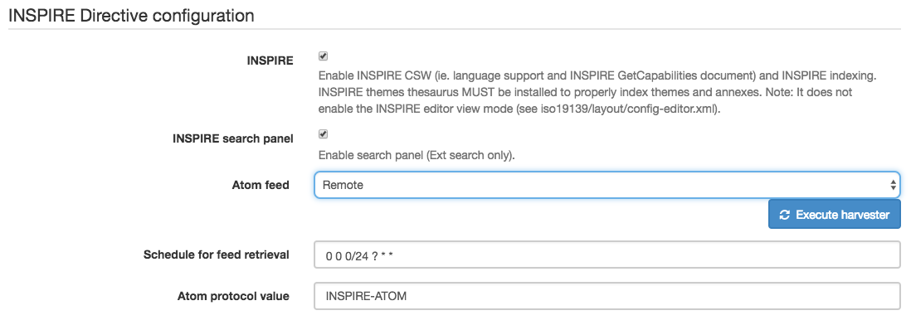
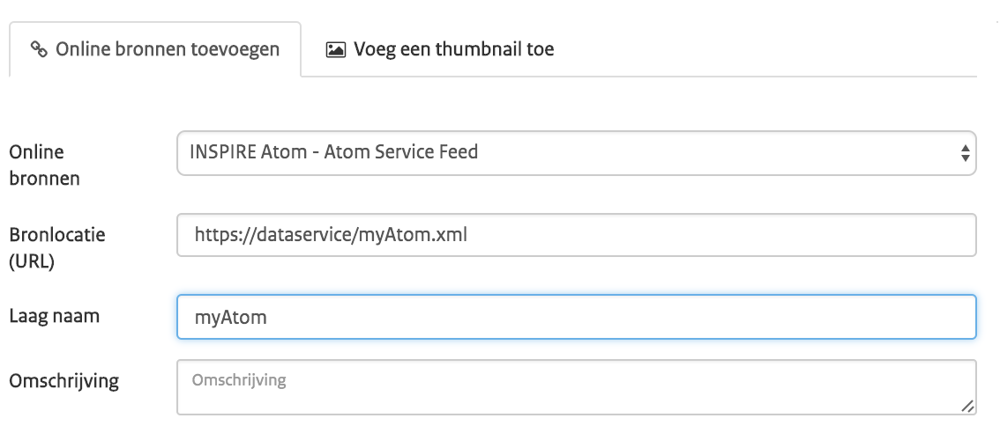

Учебное пособие по настройке службы загрузки INSPIRE на базе Atom/OpenSearch¶
В этом учебном пособии показано, как можно настроить GeoNetwork для предоставления услуг загрузки в соответствии с «техническими рекомендациями для услуг загрузки».<http://inspire.ec.europa.eu/documents/technical-guidance-implementation-inspire-download-services> `_.
Обратите внимание, что технические рекомендации разрешают использовать как Atom/OpenSearch, так и `WFS.<http://www.opengeospatial.org/standards/wfs> `_. В этом руководстве описывается, как настроить службу загрузки с помощью Atom/Opensearch.
Основа Atom/OpenSearch заключается в том, что для каждого набора данных доступно несколько загрузок файлов в различных вариантах (язык/проекция/формат). Эти разновидности рекламируются в документе «Dataset Atom Feed». Набор документов «Dataset Atom Feed» сгруппирован в документ «Service Atom Feed». Для каждого документа Service Atom Feed доступен документ OpenSearchDescription. Веб-сайт может ссылаться на этот документ OpenSearchDescription, который позволяет выполнять поиск в службе загрузки с помощью панели поиска браузера (OpenSearch).
See:
External mode implementation¶
GeoNetwork реализует OpenSearch для набора каналов Dataset- и Service Atom. Документ описания OpenSearch создается для каждого фида Service Atom.
GeoNetwork скоро будет поддерживать внутренний и внешний режимы.
во внутреннем режиме GeoNetwork будет динамически генерировать файлы Atom из содержимого метаданных.
во внешнем режиме GeoNetwork будет принимать файлы Atom, которые связаны с записями метаданных.
В настоящее время полностью поддерживается только внешний режим. Файлы Atom можно создавать в любом текстовом или xml-редакторе в соответствии с техническими рекомендациями. Для оптимизации поддержки Atom GeoNetwork использует соглашение, которое в настоящее время не предусмотрено техническими рекомендациями. Соглашение состоит в том, что любой gmd:MD_Distribution, имеющий ссылку на файл Atom, требует, чтобы поле протокола содержало определенное значение, указывающее, что дистрибутив является документом Atom. Значение по умолчанию для этого протокола — INSPIRE-ATOM, но вы можете изменить его, выбрав «Администратор» > «Настройки». Преимущество этого подхода заключается в том, что GeoNetwork не нужно открывать какую-либо ссылку на файл, чтобы определить, является ли он файлом Atom. Мы видели, как различные государства-члены санкционировали это соглашение в локализованных Технических рекомендациях INSPIRE.
<gmd:MD_DigitalTransferOptions>
<gmd:onLine>
<gmd:CI_OnlineResource>
<gmd:linkage>
<gmd:URL>http://www.broinspireservices.nl/atom/awp.atom</gmd:URL>
</gmd:linkage>
<gmd:protocol>
<gco:CharacterString>INSPIRE-ATOM</gco:CharacterString>
</gmd:protocol>
<gmd:name>
<gco:CharacterString>gdn.Aardwarmtepotentie</gco:CharacterString>
</gmd:name>
</gmd:CI_OnlineResource>
</gmd:onLine>
</gmd:MD_DigitalTransferOptions>
При развертывании Geonetwork убедитесь, что тезаурусы GEMET загружены, и активируйте редактор INSPIRE, как описано в разделе «Настройка inspire». <http://geonetwork-opensource.org/manuals/trunk/eng/users/administrator-guide/configuring-the-catalog/inspire-configuration.html> `_. В этом файле "schemas/iso19139/src/main/plugin/iso19139/loc/eng/labels.xml" (и тот же файл на других языках, используемых в каталоге) в помощнике gmd:protocol (около строки 2000) добавьте протокол «INSPIRE-ATOM», который используется для указания ссылок, ссылающихся на файл Atom (будут загружены только ссылки, имеющие это значение протокола).
В Admin > Settings активируйте расширение INSPIRE и активируйте сбор Atom (с определенным интервалом). Страница настроек облегчает установку протокола, который используется в метаданных для указания ссылки Atom.
Для каждого набора данных, который вы собираетесь опубликовать, создайте запись iso19115, используя шаблон INSPIRE. Свяжите каждую запись с соответствующим файлом атома (или загрузите файл атома)
Убедитесь, что метаданные содержат тот же gmd:code, что и файл Atom.
Теперь создайте метаданные службы, используя шаблон INSPIRE, и свяжите их со службой Atom и отдельными наборами данных (используя srv:operatesOn).
Before you validate the implementation, run the Atom harvester in admin > settings manually. A panel will display the number of processed Atom feeds and any errors that may have occurred while processing (more details in log file).
Проверить реализацию¶
If you are running the above setup online, you can use the INSPIRE validator. If the above setup is running locally, you can use Esdin Test Framework to validate the INSPIRE setup.

Частое выполнение теста во время разработки помогает выявить проблемы на ранней стадии.